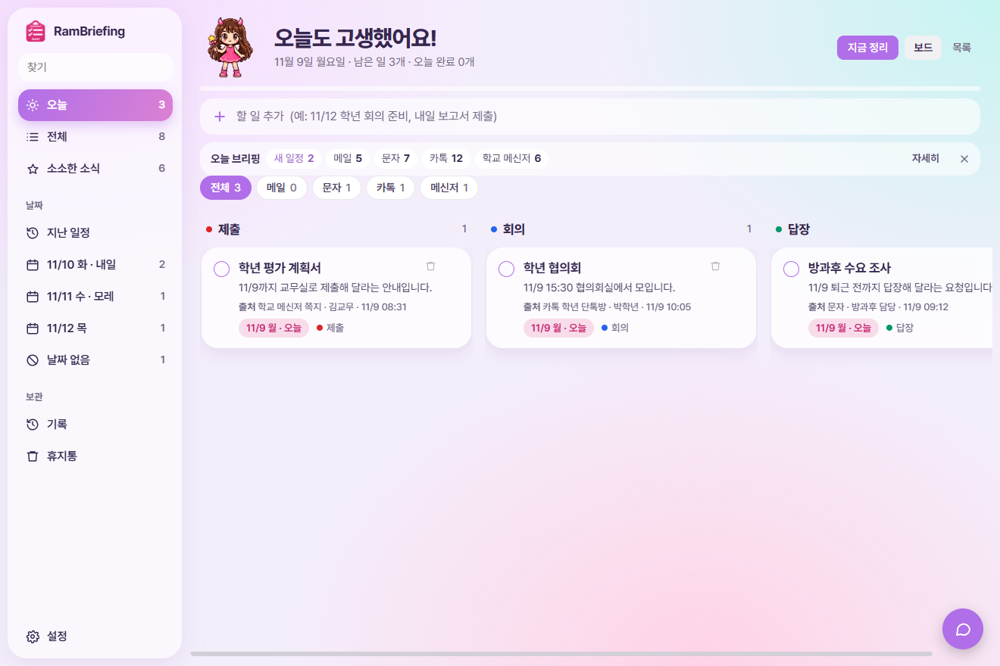
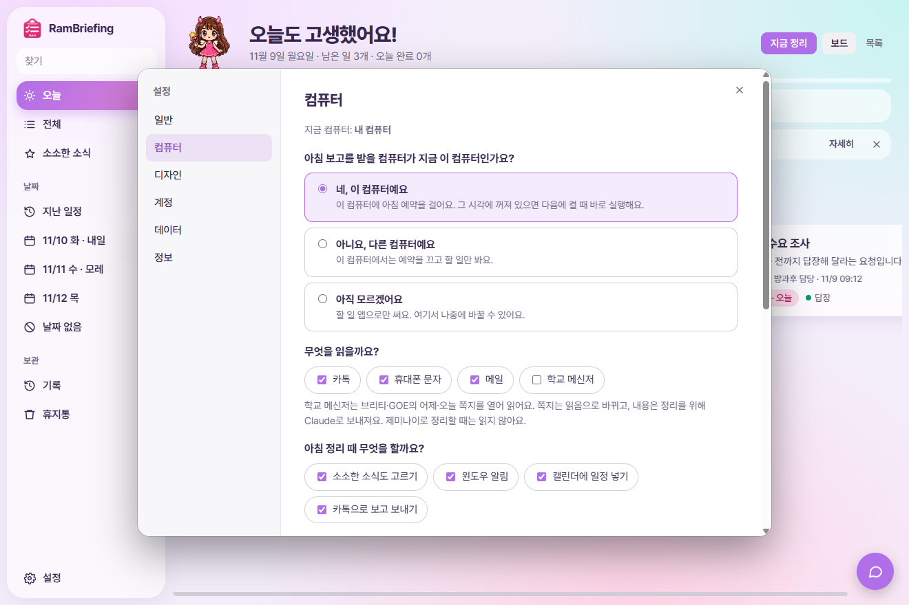
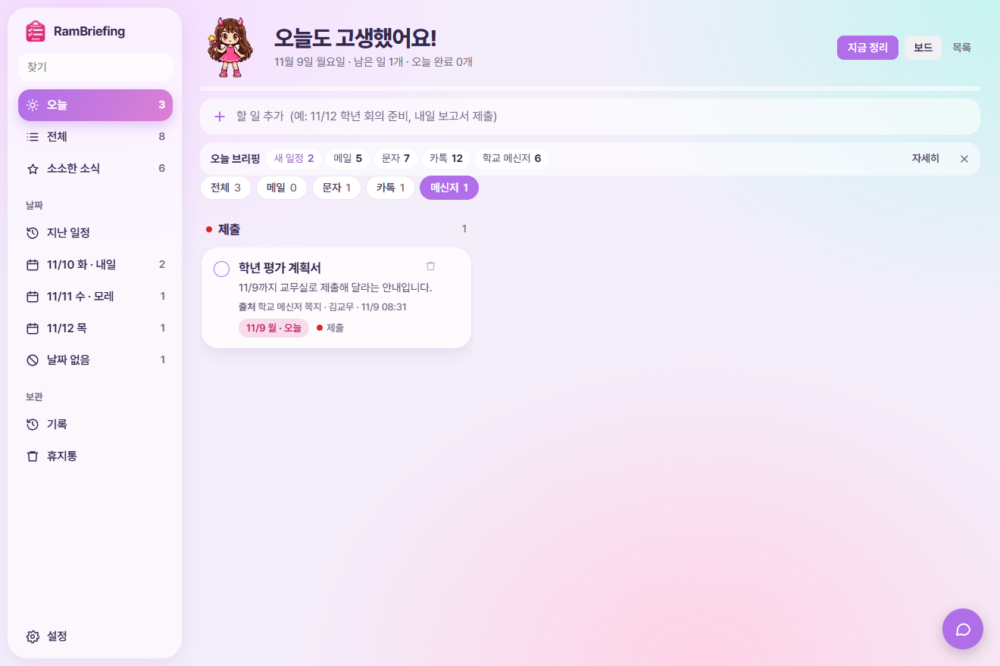
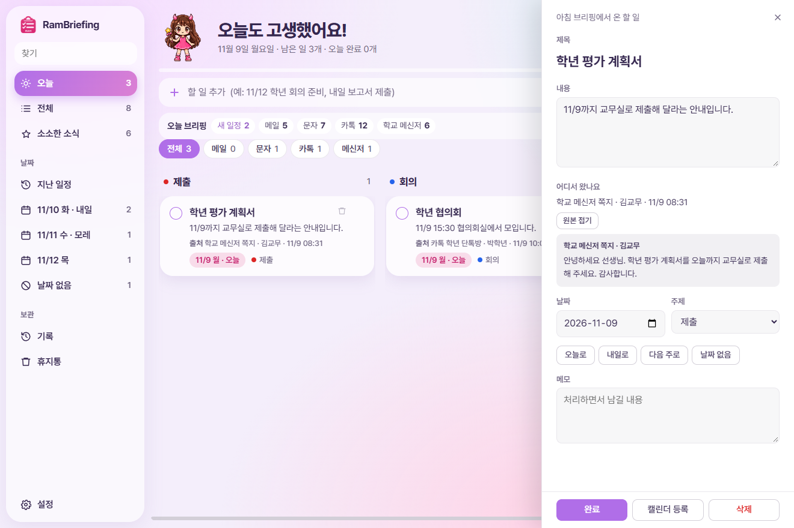
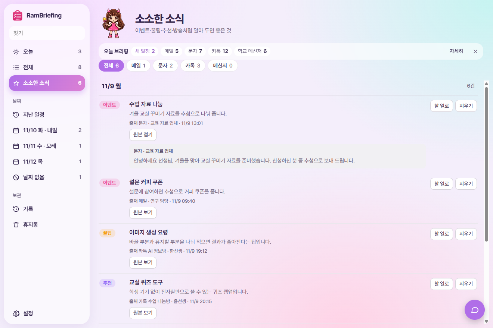
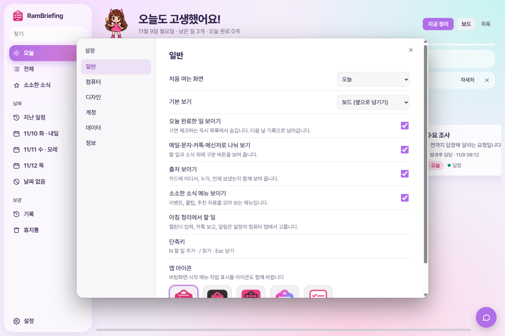
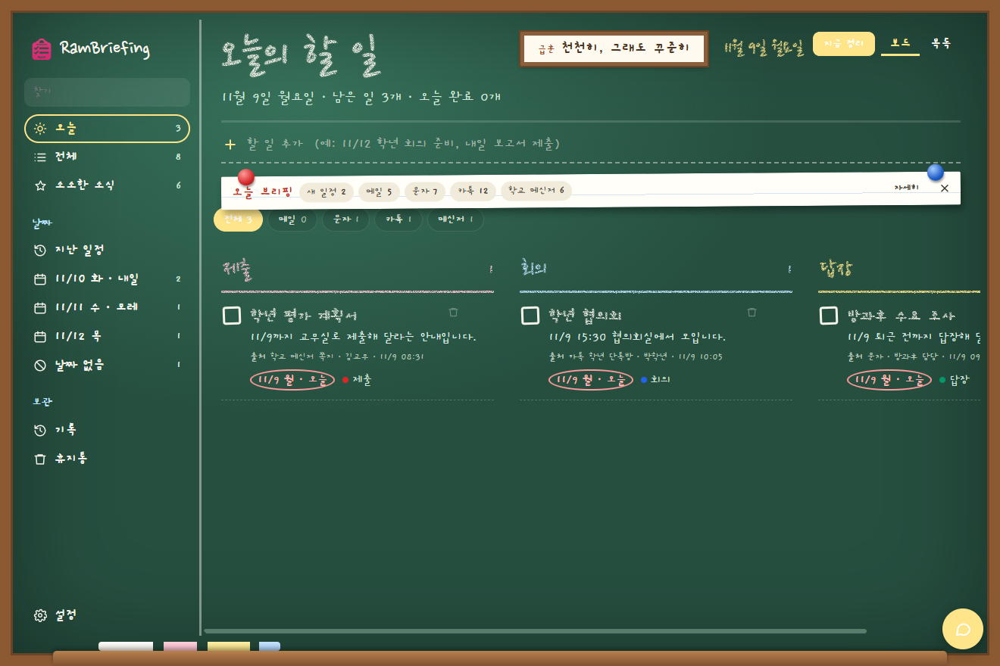

단톡방, 문자, 메일 곳곳에 흩어진 연락을 아침마다 대신 읽어 둬요. 출근하면 정리된 할 일을 확인하고 하나씩 체크하면 돼요.
정한 시각에 카톡, 문자, 메일, 학교 메신저를 읽어 할 일과 소식으로 나누고 윈도우 알림으로 알려 줘요.
어디서, 누가, 언제 보냈는지 함께 보여 주고, 버튼 하나로 실제 메시지를 펼쳐 볼 수 있어요.
메일, 문자, 카톡, 메신저별로 모아 보고, 날짜별과 주제별로도 볼 수 있어요.
할 일은 아니어도 알아 두면 좋은 이벤트, 꿀팁, 추천 자료, 방송 소식을 따로 모아요.
같은 구글 계정이면 할 일, 완료, 정리 결과가 맞춰져요. 아침 보고는 컴퓨터 한 대에서 받아요.
스킨 40여 종, 글꼴, 색, 배경 사진, 앱 아이콘 5종까지 바꾸고, 필요 없는 기능은 꺼 둘 수 있어요.

가이드의 이름과 내용은 모두 예시예요.
윈도우 PC에서 쓸 수 있어요. 설치 파일을 받아 실행하면 돼요.
| 자료 | 준비할 것 |
|---|---|
| 카톡 | PC 카카오톡을 설치하고 자동 로그인을 켜 둬요. 꺼져 있어도 앱이 켜요. |
| 휴대폰 문자 | 윈도우의 휴대폰과 연결에 안드로이드 휴대폰을 연결해 둬요. |
| 메일 | Claude 구독에 지메일을 연결해 둬요. Claude로 정리할 때만 읽어요. |
| 학교 메신저 | 브리티나 GOE 메신저에 로그인해 둬요. 설치된 PC에서만 항목이 보이고, Claude로 정리할 때만 읽어요. |
나중에 설정 → 컴퓨터에서 언제든 바꿀 수 있어요.

| 보고받을 컴퓨터 | 매일 아침 켜져 있는 컴퓨터에서 네, 이 컴퓨터예요를 골라요. 다른 컴퓨터에서는 아니요를 고르면 할 일만 봐요. |
| 읽을 자료 | 카톡, 휴대폰 문자, 메일, 학교 메신저 중에서 골라요. |
| 아침 정리 때 할 일 | 소소한 소식, 윈도우 알림, 캘린더 입력, 카톡 보고를 각각 켜고 꺼요. |
| 받을 시각 | 앱은 이 시각보다 먼저 자료를 읽기 시작해요. 카톡은 50분 전부터예요. |
| 무료 제미나이 | Claude 구독 | |
|---|---|---|
| 카톡, 문자 | 읽어요 | 읽어요 |
| 메일, 학교 메신저 | 읽지 않아요 | 읽어요 |
| 캘린더, 카톡 보고 | 자동으로 안 돼요 | 자동으로 돼요 |
정한 시각이 되면 앱을 켜지 않아도 윈도우 예약으로 자료를 읽고 정리해요. 그 시각에 PC가 꺼져 있으면 다음에 켤 때 실행해요.
| 오늘 | 오늘 날짜의 할 일 |
| 전체 | 끝내지 않은 모든 할 일 |
| 소소한 소식 | 이벤트, 꿀팁, 추천, 방송, 소식 |
| 지난 일정 | 날짜가 지났는데 끝내지 않은 일 |
| 날짜별 | 앞으로 있는 날짜별 할 일 |
| 날짜 없음 | 날짜를 찾지 못한 일 |
| 기록, 휴지통 | 지난날 완료한 일, 지운 일 |
오른쪽 위 버튼이에요. 예약을 기다리지 않고 바로 읽고 정리해요. 실수를 막기 위해 두 번 눌러야 시작해요.
카톡을 읽지 못했을 때 공지 줄에 나타나요. 카톡에 로그인한 뒤 눌러요.
할 일과 소식 위의 버튼을 누르면 그 자료에서 온 것만 보여요.

카드를 누르면 오른쪽에 상세 창이 열려요. 원본 보기를 누르면 실제 메시지가 펼쳐져요. 메일은 메일에서 보기로 지메일을 열어요.

| 완료 | 왼쪽 동그라미를 눌러요. 그날까지 줄이 그어져 남고 다음 날 기록으로 넘어가요. |
| 삭제 | 카드의 휴지통 아이콘을 눌러요. 바로 되돌리거나 휴지통에서 되살릴 수 있어요. 지운 일은 다음 정리 때 같은 제목으로 나와도 다시 나타나지 않아요. |
| 수정 | 카드를 눌러 제목, 내용, 날짜, 주제, 메모를 바꿔요. |
| 캘린더 등록 | 구글에 로그인한 뒤 카드의 캘린더 등록을 눌러요. |
| 직접 추가 | 위쪽 칸에 "11/12 학년 회의 준비"처럼 적으면 날짜까지 잡혀요. |
꼭 할 일은 아니어도 알아 두면 좋은 것을 모아요. 할 일로를 누르면 할 일로 옮기고, 지우기를 누르면 사라져요.

처음 여는 화면, 기본 보기, 나눠 보기 버튼, 출처, 소소한 소식 메뉴, 앱 아이콘을 골라요. 앱 아이콘을 바꾸면 바탕화면과 시작 메뉴 아이콘도 함께 바뀌어요.

스킨, 글꼴, 글자 크기, 색, 배경 사진, 화면 제목, 부를 이름을 바꿔요. 설정 창은 끌어서 옮길 수 있어서 스킨을 고르면서 뒤 화면을 볼 수 있어요.

교실 칠판 스킨
같은 구글 계정으로 로그인하면 할 일, 완료, 정리 결과가 맞춰져요. 다른 컴퓨터에서 네, 이 컴퓨터예요로 저장하면 이전 컴퓨터의 예약은 그 컴퓨터에서 앱을 켤 때 꺼져요.
| 증상 | 해결 |
|---|---|
| 카톡을 못 읽었어요 | 카톡에 로그인되어 있는지 확인하고 다시 시도를 눌러요. |
| 문자가 비어 있어요 | 휴대폰과 연결에서 휴대폰이 연결되어 있는지 확인해요. |
| 학교 메신저를 못 읽었어요 | 메신저에 로그인되어 있는지 확인해요. 앱은 비밀번호를 입력하지 않아요. |
| 아침에 정리가 안 됐어요 | 설정 → 컴퓨터의 준비 점검을 보고 다시 저장해요. 또는 지금 정리를 눌러요. |
| 구글 동기화가 안 돼요 | 설정 → 계정에서 로그아웃한 뒤 다시 로그인해요. |
| 내용이 비어 있어요 | 처음에는 정리 결과가 없어요. 지금 정리를 눌러요. |
쓰기 전에 꼭 읽어 주세요.
| 내 PC에 저장 | 할 일, 설정, 원본은 내 PC에 저장해요. 원본은 30일 뒤 자동으로 지워요. |
| AI로 보내는 내용 | 고른 자료의 내용이 정리를 위해 선택한 AI(구글 제미나이 또는 Claude)로 보내져요. 무료 제미나이 키의 입력 내용은 구글 서비스 개선에 쓰일 수 있으니 약관을 확인하고 고르세요. |
| 학교 메신저 | 학생과 학부모 정보가 있을 수 있어요. 학교 규정을 확인하고 켜세요. 쪽지는 열어서 읽기 때문에 읽음으로 바뀌어요. |
| 동기화 | 로그인하면 할 일, 완료, 정리 결과가 내 구글 드라이브의 앱 전용 공간에 저장돼요. 찾기에 쓰는 짧은 원문 문구도 할 일과 함께 저장될 수 있어요. |
| 로그인 정보 | 구글 로그인 정보와 제미나이 키는 PC 안에 암호화해 저장해요. |